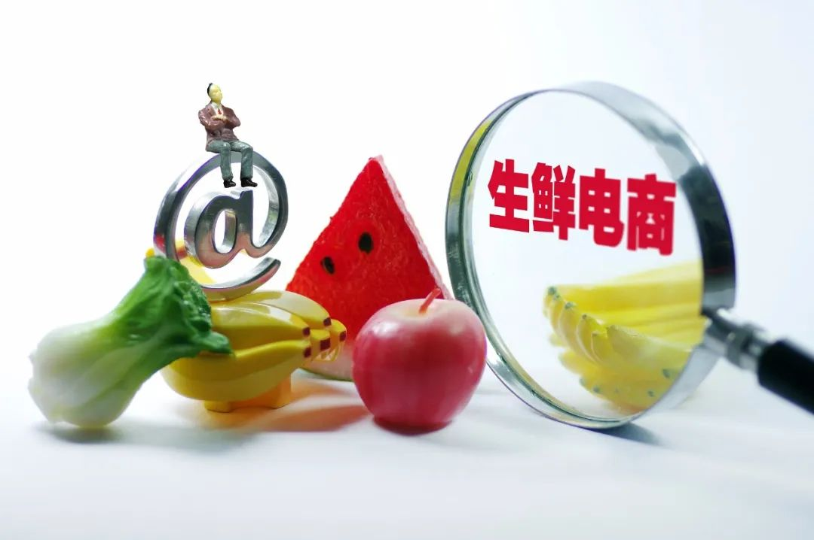
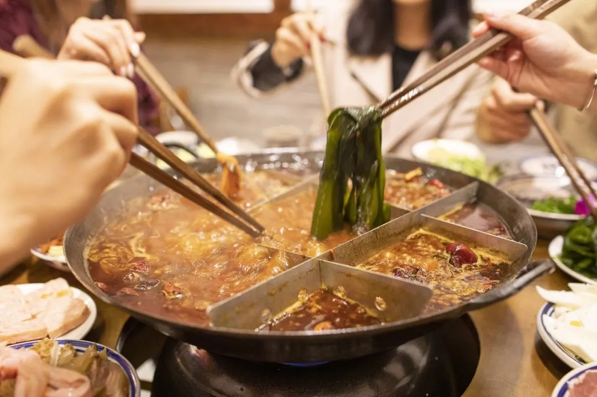
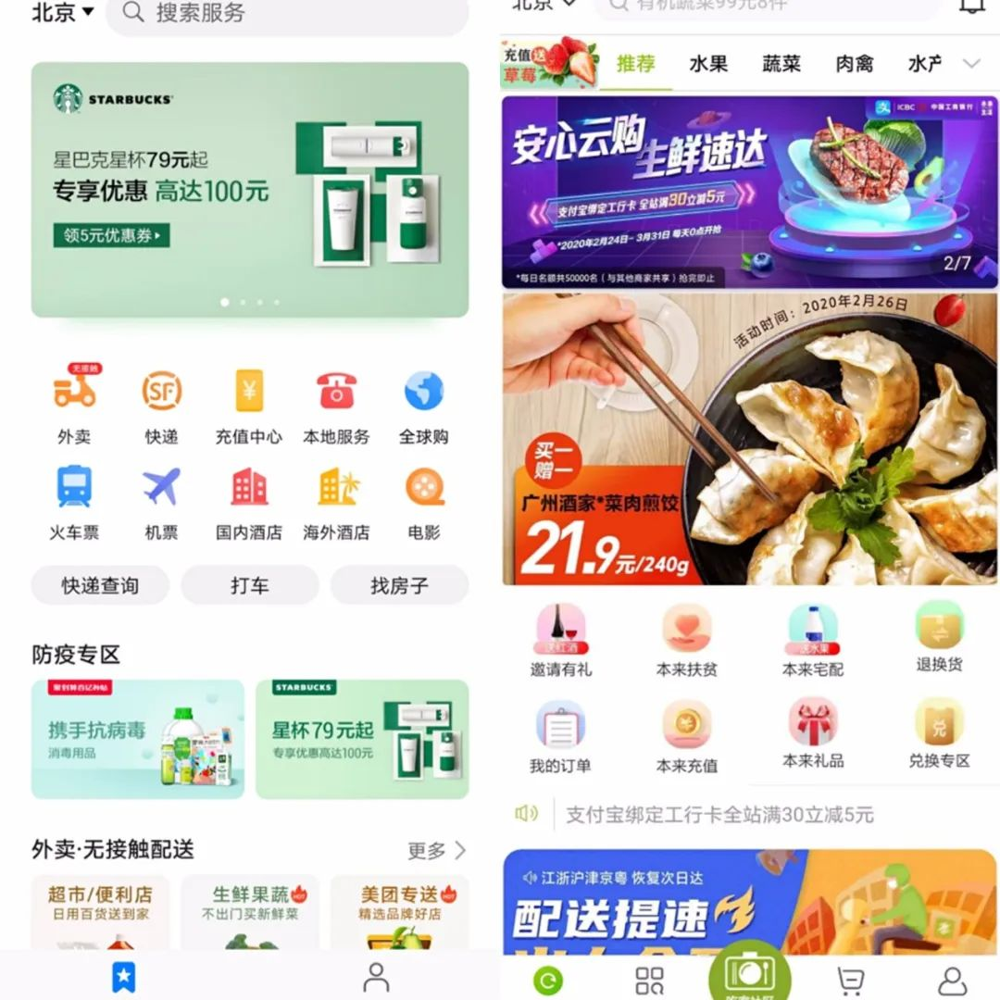
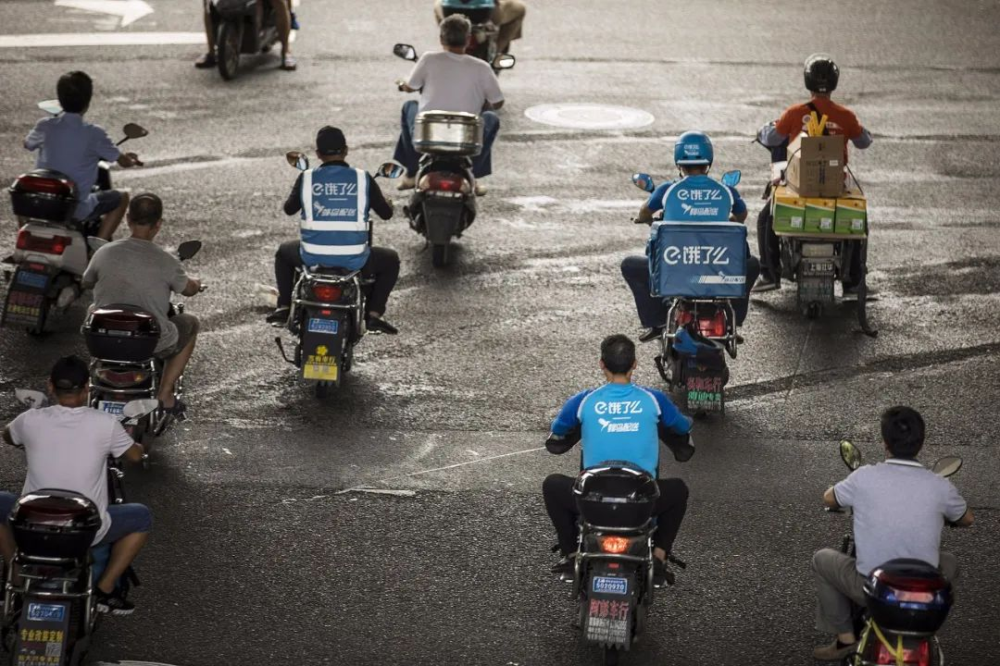

小鱼易连袁文辉：云视频会议走上风口，现在一天相当于过去一年
原文链接 备份链接 燃财经（ID:rancaijing）原创 作者 | 金玙璠 编辑 | 魏佳 受疫情影响，在节后开工首周，超过两亿职场人在线办公。这也让远程办公这个不算热门的行业迅速登上了风口，其中，远程视频会议成为强刚需。 2月13 …

作者：迟宇宙
来源：商业人物（ID：biz-leaders）
2020年1月23日上午10点，武汉通往外界的大门“砰”地一声，被锁上了。封城之前，大约有500万人离开了武汉，新型冠状病毒寄宿在一些人身上，被他们带到了中国的各个角落；留在武汉的九百来万人，在病毒的肆虐中艰难而顽强地活着，等待大门“砰”地一声被打开的那刻。
盒马鲜生配送部小哥张赛不能离开武汉。“我的两个孩子还小，负担很重，我不可能服从我的理性，我也一样上班了。”他说，“我本来就没有计划回老家，因为负担实在有点重，我想靠过年多挣一点。”
他也害怕。他安慰自己：“怕是对的，怕才会提高意识，才会珍惜生命，生活还是要继续，班还是要上的。”
也正是从那天开始，张赛成为了这座城市中罕见的自由穿梭者。他身上蓝色的盒马工装是他自由穿梭的“通行证”。这些“通行证”除了盒马蓝，还有饿了么蓝、京东红和顺丰的红黑相间。
一个动人的故事。一个普通人在武汉艰难挣扎、恪尽职守的故事。人们为他的故事心碎，也感动地掉眼泪。他们与那些前往武汉支援的医护人员、冒险运送物资的货运司机一起，被称为“逆行者”。
张赛的故事在二十多天后被《纽约时报》发现了。2月20日的《纽约时报》说，《在被封锁的武汉，他运送的还有希望》。
“对于许多中国人来说，像张赛这样的送货骑手是他们与外界唯一的联系。这些骑手曾经是中国几乎每个城市的街道上无处不见却被人忽视的存在，现在被当作英雄来赞颂。”
“但是人们还是得吃饭——这就是为什么张赛和大批送货骑手每天都在街上忙碌的原因。随着武汉和中国其他地区的人们困守家中，他们已经变成了这个国家的重要动脉，让新鲜的肉、蔬菜和其他物资流向需要的人。”
曾经喜欢拥挤在菜市场、执著于讨价还价、习惯于熙熙攘攘的武汉人、湖北人和中国人，正因对病毒的恐惧而困守家中。他们经由张赛们打通的“这个国家的重要动脉”，开始改变自己生活形态。
我们的生活，不管是主动还是被迫，也不管是否情愿，终究是起了变化。
**事情正在起变化
**
在浙江杭州，张赛所服务的那家公司，以及它的母公司、兄弟公司和盟友们，正在筹划一次新的尝试。
2月21日，阿里巴巴集团旗下饿了么、盒马、菜鸟丹鸟物流等多部门联合四通一达在杭州开通“城市生活绿色通道”，为全市居民生活物资配送开辟专门通道。
饿了么、盒马、菜鸟丹鸟物流，以及四通一达等快递公司已统一领到“绿色通道”标识。配送小哥们将标识贴在配送车辆和工作服上，通行将更方便。
这是阿里巴巴在疫情期间进行的又一次探索。
阿里巴巴毫无疑问是观察当下中国人生活形态改变的最好标本，不止因为阿里在疫情期间做了很多探索，更重要的是，阿里作为一个“生态系统”，拥有比美团、京东、顺丰更丰富的生态链。我们正在改变的生活形态，在这个生态链的节点上被记录、被沉淀、被数据化了。
2月4日，饿了么宣布联合优鲜菜场、菜文基等生鲜商户，重点升级保障全国38个城市的“手机菜篮子”，通过6万家门店，实现蔬菜水果、肉禽水产的线上一站式购买与送货上门。
家住武汉市江岸区的佳佳从2月5日起就买不到菜了，随着家里的米面粮油日渐捉襟见肘，她不得不戴上口罩和护目镜，穿上透明雨衣，只身前往附近的超市。“我就是想喝口酸奶，吃点新鲜蔬菜而已。”佳佳告诉记者，然而当她一大早赶到超市仍然看到大排长龙的队伍时，最终还是放弃了线下采购的念头。
由于新冠肺炎疫情的肆虐，今年春节变成了一场“全民宅家”的寂静长假；随着居家隔离的时间线被渐渐拉长，不少民众家里囤的菜也空了，“超市排队买菜”就这样揭开了“买菜难”的冰山一角。
对小晨和佳佳来说，她们的PlanB就是转战线上“抢菜”；其时，京东到家、盒马鲜生、叮咚买菜等生鲜电商迎来了一场始料未及的需求暴增，“下载多个买菜APP，凌晨起床抢菜”成为屡见不鲜的“魔幻现实”。（“启阳路4号”，《生鲜电商战“疫”：供应链迎来大考“共享员工”意外走红》）

这场突如其来、不知何日最终结束的新冠状病毒疫情已经困扰了我们许久，它改变了我们的生活，也改变了很多人和很多企业的命运。“火线上线”成为当下最普遍的现象。
不只被电子商务培育起的“70后”至“00后”们开始通过互联网改造生活，为疫情所迫，很多“60后”、“50后”，甚至“40后”的老人，也开始向线上“移民”，并形成线上挑选支付线下即时配送的生活习惯；疫情期间，商超不再是他们的唯一选择，在很多管控严格的地方，甚至不再是他们的选择。

疫情期间，多数人开始向线上“移民”
需求侧发生改变，一定会伴随着供给侧的改变。在商户端，越来越多平素不见踪影的商户出现在了互联网上。
1月27日开始，受疫情扩散影响，全聚德宣布旗下门店大面积“暂停营业”；2月8日，全聚德宣称，“全聚德、丰泽园、四川饭店老字号美食外卖已陆续恢复上线。”
不只是全聚德需要“上线”自救，鹅夫人、王品牛排、电台巷火锅、麦吉奶茶、哥老官们都开始了“云营业”。饿了么数据显示，截至2月25日，已有超过15万家门店新上线外卖功能。
从街边小店到五星级酒店，从全聚德、鹅夫人到轻奢下午茶，甚至是书店电影院，在疫情期间批量上线，“全商上线”开始成为一种可能。
在阿里巴巴内部，这种改变始自1月21日。钟南山院士在那天说，新冠病毒肺炎有“人传人现象”，疫情真正爆发了。饿了么发布了“一起守望相助”的声明，接着又在武汉封城那天喊出了“我们一直在”。
本地生活平台各个角落的员工，特别是奔走在武汉空荡荡街道上的骑手们，共同向武汉做出了承诺——“尽最大努力为市民提供坚实、可靠的服务”。
“一起守望相助”和“我们一直在”的承诺在1月30日铺向了全国。那天《给所有商家伙伴的一封信》从各个渠道被推出，公布包括减免佣金、极速上线和金融支持在内的“五个决定”，全力支持所有商家伙伴，共渡难关。全聚德、鹅夫人们都是“极速上线”的。
这场由疫情造成的用户“火线上线”与商家“极速上线”，最终在一直力推数字化的本地生活平台上呈现出了三种态势——
一是生鲜、商超为代表的“菜篮子”产生了前所未有的关注度。“启阳路4号”的文章中称，整个春节期间，京东到家的销售额较去年同比增长了510%；盒马鲜生的网上订单数量较去年同期激增了220%；每日优鲜平台在除夕到初四的实收交易额较去年同期增长321%；叮咚买菜的除夕订单也较上月涨超300%。
“另据中商产业研究院提供的数据显示，2019年国内生鲜电商行业交易规模约为3223亿元，预计2020年市场交易总额将突破4600亿元。”
这是疫情造就的新机会。网上“菜篮子”解决了用户的“痛点”，使他们不必在菜市场中拥挤、在超市中排队，减少了感染的风险；同样它也解决了商户的“痛点”，使其能够在不能正常营业的疫情管控期，依旧可以“生产自救”，甚至开辟出新的销售渠道与商业模式。
二是良品铺子等传统电商商户开始或者加快登陆本地生活平台，形成“电商+本地生活”的“双路模式”，这种模式本质上是打通“新零售”与“新服务”的“双新模式”。对于传统电商品牌来说，这种“双新模式”或许会成为其未来“满血复活”的必杀技。
三是言几又书店、万达、大悦城甚至是中石油的昆仑便利店们纷纷出现在了本地生活平台上。这些书店与商超品牌，素来重视线下体验，通常自营线上业务，与本地生活平台向来“井水不犯河水”。它们的出现，使本地生活的形态变得更加复杂多样。
其实阿里的本地生活平台一直在尝试进行多重混合的整合。作为外卖平台的饿了么，此前曾多次与服装品牌进行跨界，稍早前还与PEACEBIRD联名推出新款服装。分析普遍认为这是双方打破自身边界、扩展品牌辐射面的举动，但饿了么疫情期间的变化，大量“非相关”商户的入驻，都使人们相信，多重混合模式下，一切皆有可能。
**生活会大爆炸吗？
**
2月19日，随着时间的推移，复工又成为了疫情期的新需求。
口碑饿了么宣布推出开工“十件套”助力本地生活行业复苏，其中包括：全国符合条件的口碑商户，佣金减免将进一步延长至2020 年 3 月 31 日、 10万家门店新上线外卖功能、多位明星和淘宝主播零佣金为商户公益带货，平台提供免费流量支持、对接复工企业订餐需求。
此外，口碑卡券还将支持到店自提，提供无接触安心送、提供 4000 门免费线上课程，从卫生防疫到政策解读供商户实时学习。
阿里巴巴集团合伙人、阿里本地生活服务公司总裁王磊说：“我们一直在努力……我们做这个决定的时候就准备好与大家长期坚守共同努力，商家的生命线就是我们平台的生命线。”
阿里本地生活平台的一系列动作，加之整个阿里巴巴数字经济体在抗疫期间在物资筹措、物流保障、资金捐助、技术支持诸方面的付出，更兼外卖小哥们恪尽职守，甘冒风险将生活物资准时送达，使其赢得了来自商户与用户的双重口碑。
很多人因为它的这些举措而褒奖其“德行”，将之作为“好公司”、“社会企业”的典范。
放诸阿里身上，这样的评价与褒奖固然没错，也符合其“让天下没有难做的生意”的初心，但在我看来，其背后的商业逻辑才是真正值得探讨的。
我们知道，阿里本地生活是一个服务平台，其本质是一个生态系统的设计师与管理员。商家也好，顾客也好，为商家与顾客服务的骑手也好，都是生态系统中不可或缺的一部分，一荣俱荣，一损俱损。
疫情肆虐之时，是线下的商家最就艰难的时刻，此时帮商家，本质上也是帮自己；顾客们封闭家中，此时服务好他们，就是占领用户心智、培养用户忠诚度的最好时刻；骑手游走在街巷中，他们是最好的企业品牌大使，也成为最具凝聚力的企业文化建设者。
从阿里巴巴的历史与产品来看，阿里的逻辑是解决最需要解决的商业社会难题（也是其自身“痛点”）。它相信解决了社会难题，就是解决了商业空间，自己一定可以得到足够的商业回报。最初的1688（B2B业务）如此，支付宝如此，菜鸟如此，阿里云如此，如今的阿里本地生活同样如此。科技、商业与社会发展融合到一起，将企业的动能与社会的势能融合到一起，它便成功了。（“商业人物”，《它将改变中国》）
依照阿里巴巴一直以来的商业逻辑，阿里本地生活其实正走在它一直在走的那条路上，并没有做更多、更出挑的事，只是在新冠疫情的背景板之下，别人停下或者放缓了脚步，而它还在坚持着往前走而已。
在本地生活平台上发生的这些变化，很容易使人们想起17年前。那场“非典”疫情，最终倒逼实体商品选择了“上线”。17年后，这场突如其来的新疫情，会不会造就新的服务商品“上线”？
用户端的上线代表的是需求，是习惯。对于新出现的大量70前用户来说，这种习惯最终能否沉淀为心智的改变，是短期需求能否变成长期需求的关键。
这是很难的。
我们都知道，“上线”对于他们中的绝大多数人来说是被迫的，是疫情管控期的无奈之举，而因线上动作迟缓而在各种“抢菜”中的空手而归，又会加深他们的挫败感。
至为关键的是，线下购物、逛菜市场、超市排队，本身就是他们生活的一部分，是他们重要的“社交”。生活压缩在线上空间，加上百无聊赖，一定会使他们的生活变得更逼仄。他们需要参与感与成就感，如果不能同步解决这些需求，他们将很难成为“本地生活”中的常客。

网上购物虽方便，但疫情结束后去商场吃顿火锅是很多人的愿望
同样的难题也会出现在低线城市。我们知道，在大城市中，人们已经习惯了本地生活平台的各种服务，而本地生活的影响与覆盖范围也可以保障我们从容不迫的生活。当本地生活“下沉”到低线城市，甚至“下沉”到了城镇之后，这种影响与覆盖是否可以满足人们的普遍需求？毕竟生活不不止米和菜，不止油盐酱醋，还有咖啡和奶茶，还有音乐与啤酒。
这就是生活。如果你的需求得不到满足，那么“生活”就不会“爆炸”，它只能慢慢地蓄积能量，等待量变到质变的那天。
低线城市用户在当地互联网生活平台上所面临的选项并不算多，他们的需求同样“多样化”，同样很难得到普遍满足。让他们当中的年轻人形成新的消费习惯并不难，难的是他们的粘度。如果不能为他们提供丰富的“生活”，就不会赢得他们的“忠诚”；要他们“忠诚”也不难，想办法满足他们即可。
至于传统的商超，很难想象，一旦疫情结束，人们重新回到熙熙攘攘当中，他们是否还会继续“多重混合”。“混合”是为了利益，当他们从“不混”中可以攫取更多、性价比更高的利益时，“多重混合”就变得可有可无了。
疫情使生鲜电商成为了一门“好生意”，是因为突然出现的消费场景给这个行业吃了“兴奋剂”。这是一个偶然造就的场景，期望这个消费场景变成常态并不现实，将被催熟的消费场景夯实为理性场景，让商户与用户心智回归理性，或许才是本地生活的最好选择。

手机生活服务页面上，大都开通了生鲜配送功能
新冠疫情当中，受创最大的是餐饮业。规模大一些的西贝、眉州东坡、老乡鸡，规模更小的小食店，几乎都在疫情覆巢之下，担心是否能够完卵重生。
阿里巴巴的“拯救者”角色扮演得很不赖。自2月3日，盒马联合云海肴、西贝、探鱼、青年餐厅等餐饮品牌达成“共享员工”的合作。2月6日，阿里本地生活推出就业共享平台，招募万名餐饮员工临时送外卖。
然而这终究只能是寒冬中的相互取暖。春暖花开时，人们又会拥抱道别，带着依依惜别的深情，开始各自的生活。
这就是生活，用户如此，商户也如此。如果“救助式自救”或“自救式救助”不能变成一个用户、商户、平台、配送等多方充满参与感的生态，那么它只能成为一个短期场景。疫情结束了，人们会很怀念它。
**生活如何大爆炸
**
毫无疑问，人们需要更好更丰富的生活。一个国家发不发达，也首先是人民群众的物质生活能否得到满足、保障和提升，“人民日益增长的美好生活需要和不平衡不充分的发展之间的矛盾”能否得到解决。
我们身边已经出现了家中从未开过火的“外卖一代”。这样的生活方式，没有什么不好，如果外卖品质够好，也能解决好环保问题，还能提升生活品质，间接提供就业机会，那它就是一种好的生活方式。
所以讨论本地生活拥有多美好的未来、多大的公共价值与商业空间，是一件毫无意义的事。它是刚需、是必须，是我们所期待拥有的。
它只是需要变得更好，更丰富、更便捷、提供更多服务与价值。
德鲁克在《创新与企业家精神》中说，企业经济行为的最终目的，也是企业战略的共同点，就是“它们创造了客户”。
具体而言，就是通过创造客户功效、定价、适应客户的社会和经济性状以及向客户提供代表真正价值的东西而实现“创造客户”的目的。
当中，至为关键的是创造客户功效。“在创造功效的战略中，价格通常无多大关系。只有使顾客做能够满足其目的的事情，这个战略才会成功。它的成功在于它问了：对顾客来说，什么是真正的‘服务’，真正的‘功效’？”
“创造功效使人们能够以自己的方式满足他们的需求和愿望。”德鲁克说，“它提供了一种不同的功能。”
德鲁克所说的“创造客户”的路径中，无论“创造功效”，还是“定价”，抑或“顾客的现实情况”与“提供顾客想要的价值”，一切都围绕着“新价值”，亦即能否为顾客提供相匹配的“价值”，决定了能否“创造客户”。
“定价”就是“新价值”——“它的价格应该反映消费者购买的真正‘价值’，而不是供应商的‘成本’。”
“顾客的现实情况”就是“新价值”——“无论顾客买什么，都必须符合现实状况，否则产品对他们就毫无用处。”
“提供顾客想要的价值”也是“新价值”——“它们使顾客得到了满足，给予顾客要卖的东西，换言之，它们让顾客觉得钱花得很值。”
确切无疑的是，依靠现有的一切，用户与商户都无法获得持久的“新价值”。疫情管控期提供了短暂的幻觉，而“新价值”需要提供的新服务场景、新模式与新体验，并未形成长期的基础设施。
当疫情结束，生活回到常态的时候，人们需要的不是需求得到满足，而是平台能够提供出他们尚未意识到的或是尚未体验到的“需求”。这些“尚未”，才是包括口碑饿了么、美团这些生活平台所应该思考的。
要创造新价值，要让本地生活真正爆炸起来，归根结底是价值观的问题。
疫情期间，穷极无聊的我看完了一部长剧，《外科风云》。结局部分，仁和医院耐药菌株疫情，与当下的新冠状病毒疫情何其相似。医护人员放下得失与成见，付出巨大牺牲，终于战胜了疫情。无论是原罪的一代学阀还是，良心发现的老院长，都在面对病患的时候回归了初心——那两个悬在两任院长墙上的大字。
初心就是为什么——因何而出发，为何要坚持，以及要服务于谁。
我们还是以阿里本地生活为例。其所倡导的“新服务”，内部定义是——“互联网时代，努力打造服务、产品、硬件体系的数智化，构建全球领先的数智化服务业新体系。”
它有五个关键词，除了“新服务”外，还有“新工具”、“新价值”、“新连接”、“新目标”……
从外部来看，“新服务”就是数智化的服务连接。它也是“人货场的重构”。它试图通过改变百万商户，最终能服务到每一个本地生活人群。（“商业人物”，《它将改变中国》）
本地生活本质上是服务服务业的平台，它的初心只能也必须是“服务”。数智化连接是路径，是打通“生活大爆炸”的手段。
如果说“中台”是本地生活服务业的神经中枢的话，数智化连接就是为现代服务业建立起一套高效的神经系统，以协调张赛们所代表的“这个国家重要的动脉”能够做出精确动作，确保“新服务”的实现。
我喜欢看到饿了么的、美团的、盒马的小哥每天在街巷中奔走，他们代表生活，真正的、鲜活的人的生活。
“你本可以看到更多晒太阳的人，下棋的人，买菜的人，没有任何事可以忙的人，”他在1月30日的那篇文章中写道。“平时我嫌他们太吵，现在才发现，没有人嚷嚷的城市，没有意思。”（《纽约时报》，《在被封锁的武汉，他运送的还有希望》）
没有人吵吵嚷嚷的城市没有意思，没有商户吵吵嚷嚷的生活平台也没有意思，没有人们一起吵吵嚷嚷的本地生活更没有意思。
没有人生活在别处，人们只会生活在本地。未来的本地生活会是什么样子，谁也说不清楚。时代一直在变，人们的需求也在不停变幻。本地生活的未来，一定是美好的，因为人们需要它美好。

疫情中，很多人开始怀念起从前熙熙攘攘的街头，所代表的生活气息。这也意味着线上服务除了解决人们的需求外，还需要构建新服务和新价值。
中国的电子商务也好、线上生活也好，都曾经历过流量搏杀的残酷。流量收割了用户的心智，补贴形成了用户的习惯，但羊毛薅掉后，人们还得重新培育草地，重新建设生态。
人们需要更好的本地生活。未来美好的城市生活，需要本地生活平台有“服务”的初心，有数智化的服务能力，有完整生态链的互通。最关键的是，它要让用户成为用户，让商户成为商户，让参与者成为真正的生态建设者。
德鲁克说：“一个创新是市场或社会的变革。它为用户带来更大的好处，为社会带来更多财富，以及更高的价值和满足。检验创新的标准往往是它为用户做了什么。”
至于是否以“新零售+新服务”的双轮模式驱动新消费，那是本地生活平台的事。人们要的是“新消费”提供的美好，是“做了什么”。
*头图购买于视觉中国
（关于未来本地生活，你有什么需求吗？欢迎留言讨论。）
推荐阅读

严正声明：“商业人物”所有原创文章，转载均须获授权。一切形式非法转载，包括但不限于盗转、未获“商业人物”授权通过第三方转载行为，均属侵权行为，“商业人物”将公布“黑名单”并追究法律责任。“商业人物”只愿与尊重知识产权的机构合作。
投稿、约访、合作，联系邮箱：bizleaders@qq.com
添加微信biz-leader，获转载授权或邀您加入商友群
1.长按右侧二维码即可关注***。*
2.期待您置顶与星标。欢迎分享与评论，欢迎通过留言或私信方式给我们提供选题线索。
3.点击“阅读原文”，看商业人物官网，获取更多精彩内容。**

原文链接 备份链接 燃财经（ID:rancaijing）原创 作者 | 金玙璠 编辑 | 魏佳 受疫情影响，在节后开工首周，超过两亿职场人在线办公。这也让远程办公这个不算热门的行业迅速登上了风口，其中，远程视频会议成为强刚需。 2月13 …
原文链接 备份链接 《创新经济战疫计划》，是燃财经在新型肺炎疫情期间推出的特别栏目，关注创新经济企业遇到的新难题、商讨应该采取的新对策，希望能够帮助中小企业一起战胜挑战、把握机会。 作者 | 赵磊 编辑 | 周昶帆 三个微信群，上千条语 …
原文链接 备份链接 燃财经（ID:rancaijing）原创 作者 | 金玙璠 编辑 | 周昶帆 疫情下的“宅经济”带给很多行业新的机会。送粮油、送蔬菜、送防护用品，外卖小哥们奔波在各大城市的街头，维持着城市系统的正常运转。 中研产业研究 …
原文链接 备份链接 来源：上海市委宣传部 “ 自新冠肺炎疫情发生以来，上海文化企业主动承担社会责任、积极作为，捐款捐物，踊跃参与各类志愿活动，表现出了良好的精神风貌和社会担当。 ” 自新冠肺炎疫情发生以来，上海文化企业主动承担社会责任、积 …
原文链接 备份链接 《创新经济战疫计划》，是燃财经在新型肺炎疫情期间推出的特别栏目，关注创新经济企业遇到的新难题、商讨应该采取的新对策，希望能够帮助中小企业一起战胜挑战、把握机会。 作者 | 唐亚华 编辑 | 魏佳 疫情下的健身行业，正在 …